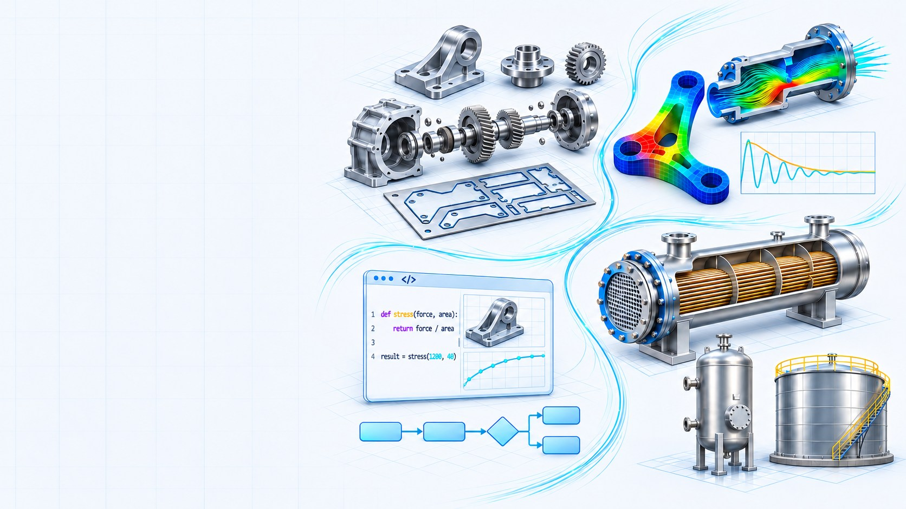
Mahmoud
Samhoud.
I'm a Mechanical Simulation Engineer
Predicting failure, optimizing performance, and validating designs through high-fidelity mechanical simulation.
Design Simulate Automate Validate Deliver
Ideas, engineered.
Explore my recent work.
- All
- Mechanical Design
- Mechanical Simulation
- Engineering Software
- Static Equipment
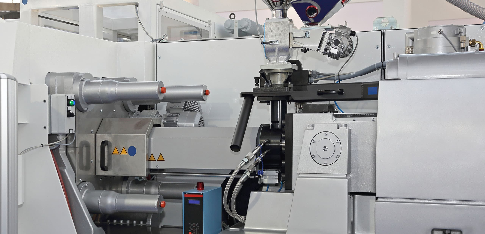
ExtruCAD
Cold extrusion calculations, brought together in a dedicated engineering tool.
Explore project
Motion Analysis
Exploring inline-engine kinematics through MATLAB and SolidWorks.
Explore project
Nesting Plates
Comparing plate layouts to improve material use and reduce scrap.
Explore project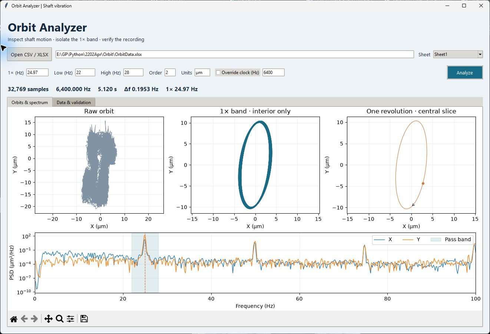
Orbit Analyzer
From vibration recordings to verified shaft-orbit plots, with a complete Python desktop workflow.
Explore project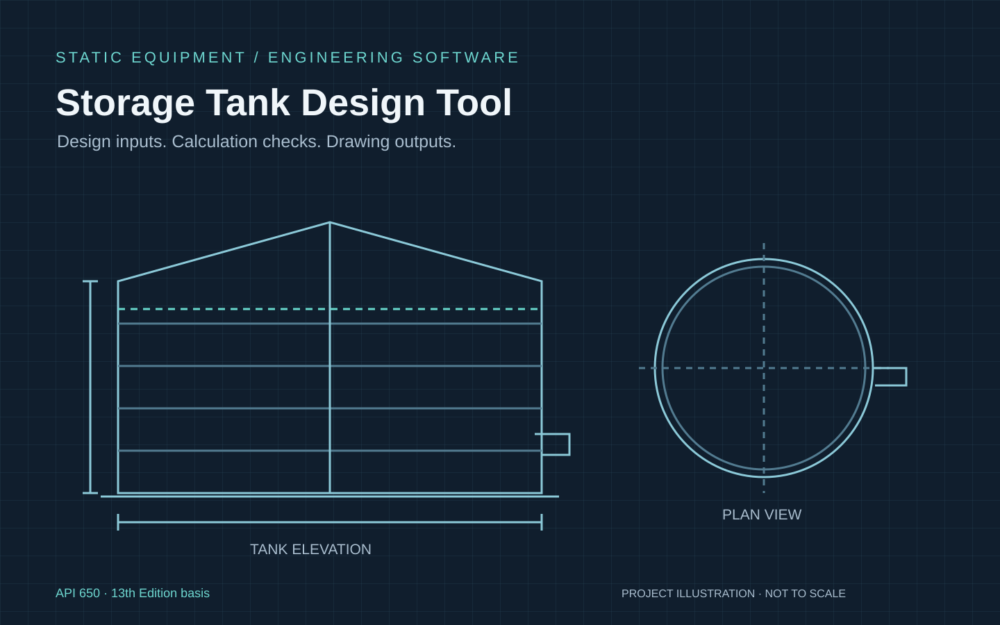
Storage Tank Design Tool
Tank configuration, engineering checks and drawing outputs in one browser application.
Explore project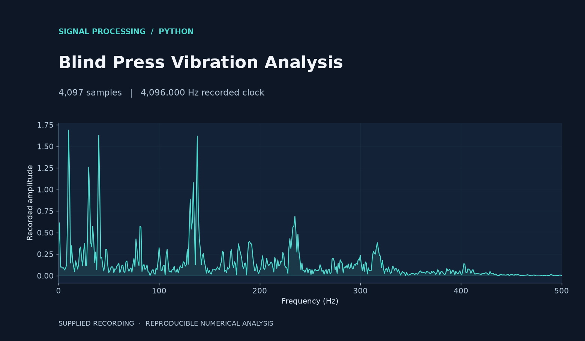
Blind Press Vibration Analysis
A single press recording connects time-domain statistics, frequency content, modulation, repetition and a circular waveform view.
Explore project
Bearing Vibration Analysis
A reproducible analysis of the supplied bearing waveform, bringing spectral, envelope, cepstral and time-varying views into one project.
Explore project
Two-Channel Rotor Diagnostics
Full-spectrum analysis and channel-mean trends share one paired displacement recording, with explicit timing and interpretation limits.
Explore project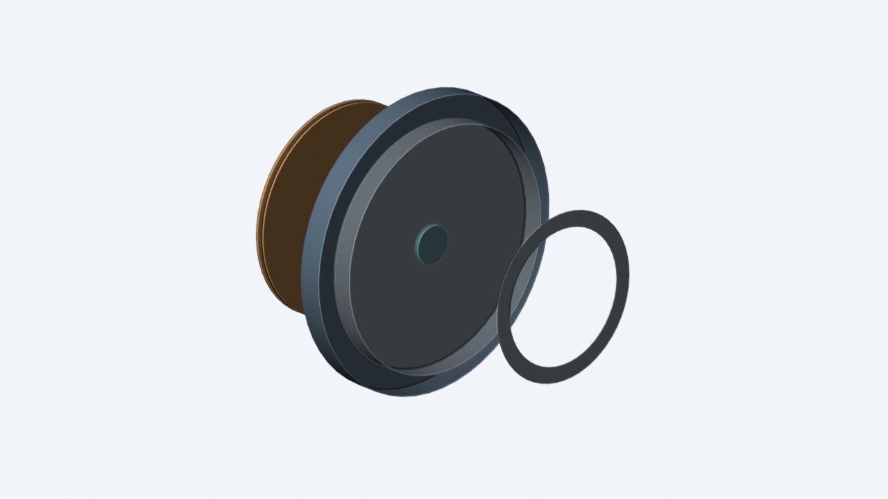
Washing Machine Shaft
Third-year mechanical engineering group project: shaft design, bearing selection, housing analysis and assembly documentation.
Explore project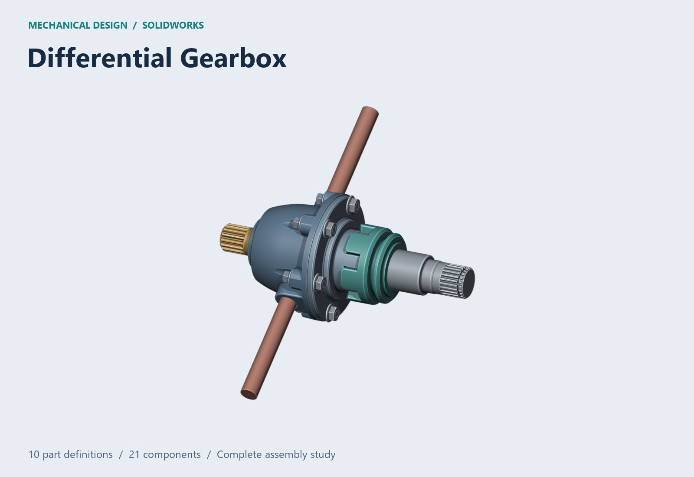
Differential Gearbox
A complete SolidWorks assembly study with every component illustrated, material selections and a full-HD assembly film.
Explore project
Weld Clash Check
Evaluate nozzle, weld and attachment clearances, inspect conflicts and refine vessel layouts.
Explore projectEngineering with purpose.
I turn engineering questions into models, calculations, and practical design decisions.
I’m a Mechanical Engineer based in Cairo, working in static equipment engineering and structural simulation. My experience spans FEED and EPC projects in oil, gas, and petrochemicals, with design and analysis guided by ASME and API standards.
My work brings together finite element analysis, CAD, and engineering software. I use tools such as Abaqus, SolidWorks, and PV Elite, alongside Python and MATLAB, to investigate performance, validate designs, and automate calculations.
- Phone: +20 106 026 0244
- City: Cairo, Egypt
- Email: m.samhoud@hotmail.com
- Freelance: Available
Built on engineering.
Professional Experience
Static Equipment Engineer
July 2025 - Present
ENPPI, Cairo, Egypt
Structural Simulation Engineer
Aug 2024 - July 2025
El-Araby Group, Reasearch & Development Dpt., Banha, Egypt
FEA Engineer (Part-time Freelancer)
Jan 2024 - Present
Freelancer
Data Analyst
Aug 2022 - Dec 2023
Freelancer
Condition Monitoring Engineer (Intern)
Nov 2021 - Jul 2022
RITEC, The Condition Monitoring Co., Cairo, Egypt.
R & D Mechanical Engineer (Intern)
Sep 2021 - Oct 2021
El-Marakby Steel, 6th of October, Egypt
Hydraulics, Electro Hydraulics Engineer (Intern)
Jul 2021 - Aug 2021
Siemens, Cairo, Egypt
Mechanical Engineer (Intern)
Jul 2020 - Aug 2020
North Cairo for Electricity Distribution, Cairo, Egypt
Education
Data Science with Python
Jan 2022 - Jul 2022
Datacamp
A 97-hour program covering Python, data analysis, visualization, and machine learning.
BSc in Mechanical Design & Production Engineering
Oct 2018 - Jul 2022
Faculty of Engineering, Cairo University
Mechanical design, solid mechanics, manufacturing, and finite element analysis. Practical work in CAD, simulation, and engineering programming.
Very Good with Honor · Ranked 5th
Pre-Engineering
Oct 2017 - Jul 2018
Faculty of Engineering, Cairo University
Foundation studies in mathematics, physics, mechanics, and engineering fundamentals.
Tools behind the work.
From design and simulation to engineering software and analysis.
Design & Simulation
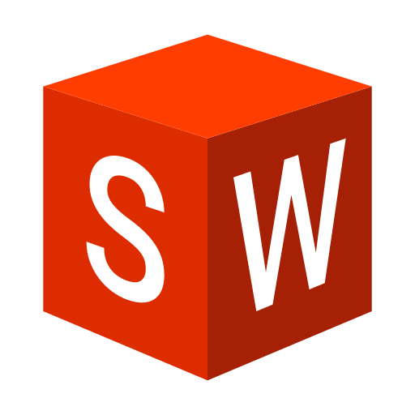

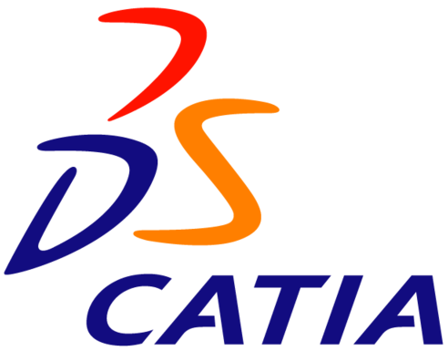
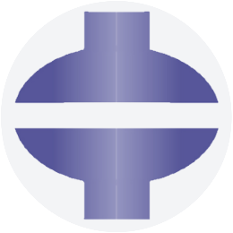
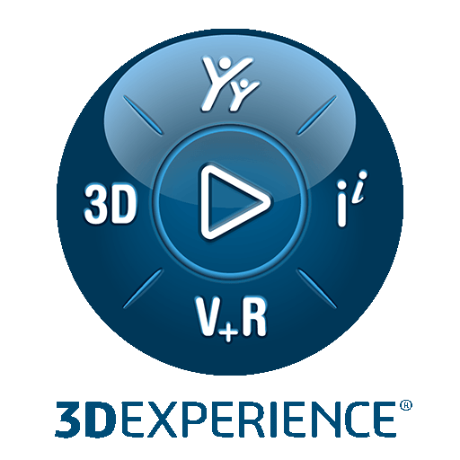
Static Equipment
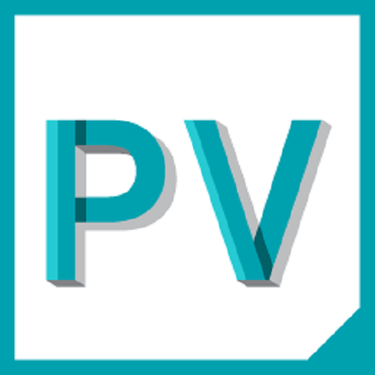
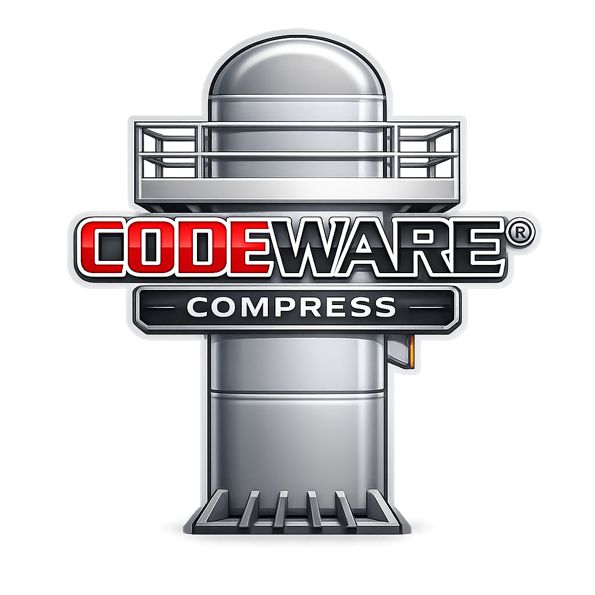
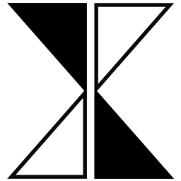
Programming
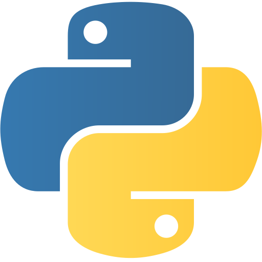

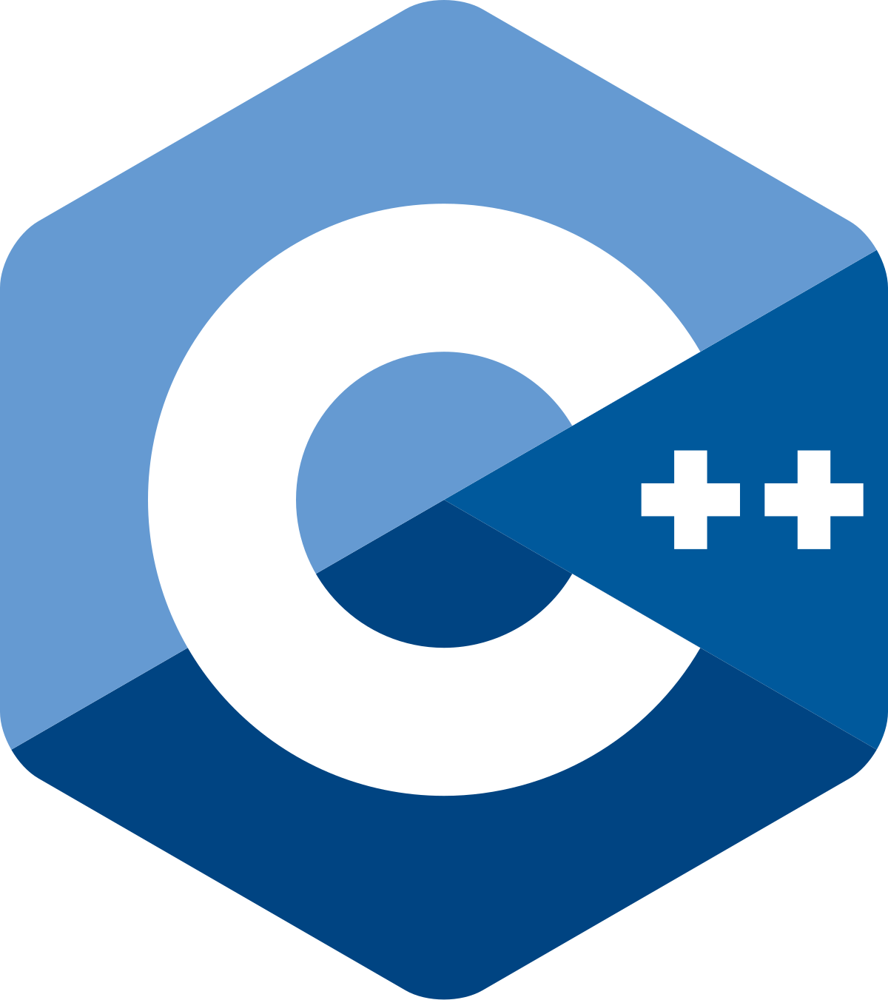
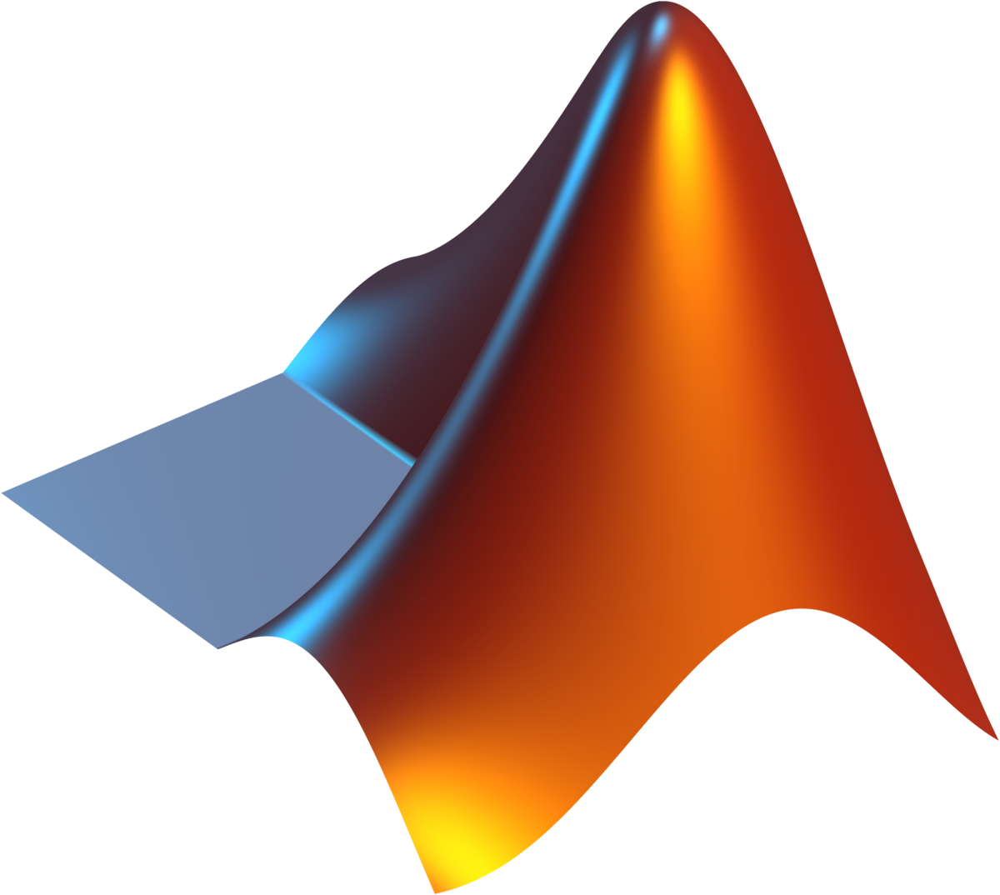
Data Analysis
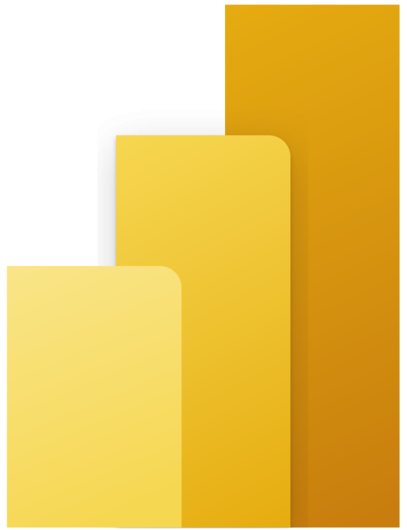

Bearing Vibration Analysis
Project overview
A reproducible analysis of the supplied bearing waveform, bringing spectral, envelope, cepstral and time-varying views into one project.
One input, connected analyses
The input outerfaultdata.txt appears in Vip_Analysis + Waterfall. SHA-256 comparison confirmed identical copies; these analyses are grouped in one project and the repository stores one canonical recording. The press and bearing recordings have different contents, so each receives its own repository even though their analysis methods overlap.
Measured results
The strongest non-DC X-channel bin is 1,694.333 Hz. True RMS is 0.9926 and peak-to-peak is 11.7363, both in recorded units. The default-band envelope spectrum peaks at 23.906 Hz. The time–frequency analysis uses 285 overlapping windows, with 23.842 Hz bin spacing.

Project details
Dataset
585,936 samples · 97,655.999 Hz
Validation
13 numerical checks passed. Full recording processed.
Weld Clash Check
Vessel layout and clearance review
A standalone browser tool for checking nozzle, weld and attachment spacing. It combines geometry inputs, pairwise clearance results, developed-shell and head views, interactive relocation and report exports.
Demonstrated on closed drain drum
The supplied layout contains 17 shell nozzles and a 40 mm minimum-clearance criterion. The extracted checker reproduces zero clashes: 352 OK comparisons and eight modeled exclusions. The governing ring-to-nozzle gaps are exactly 40 mm; two high-end nozzles clear the end weld by 46 mm.
Project details
Scope
Cylindrical and conical shells, heads, nozzles, seams and attachments.
Method
Developed-shell spacing, nozzle footprints, weld bands and support geometry.
Tool documentation
Workflow, calculation methods, outputs, limitations and a verified application example.
View Full ReportTwo-Channel Rotor Diagnostics
Project overview
Full-spectrum analysis and channel-mean trends share one paired displacement recording, with explicit timing and interpretation limits.
One input, connected analyses
The input orbit_data.csv appears in FullSpectrum + SCP. SHA-256 comparison confirmed identical copies; these analyses are grouped in one project and the repository stores one canonical recording. The existing Orbit Analyzer remains separate and unchanged; this project adds only the non-orbit FullSpectrum and SCP work.
Measured results
The strongest non-DC X-channel bin is 25.040 Hz. True RMS is 3.1263 and peak-to-peak is 14.8198, both in recorded units. The Y channel also peaks at 25.040 Hz. The largest signed-spectrum bin is -25.040 Hz under the X + iY convention. The Y mean of -5.4352 is retained in the mean trend rather than removed by filtering.

Project details
Dataset
32,768 samples · 6,410.256 Hz
Validation
13 numerical checks passed. Full recording processed.

Motion Analysis - Inline-Engine Motion Analysis
Project Overview
Developed a comprehensive motion analysis system for inline engines, focusing on the dynamic behavior of engine components and their interactions.
Technical Approach
The project involved creating a detailed simulation environment that includes:
- Kinematic analysis of engine components
- Dynamic force calculations
- Vibration analysis
- Real-time visualization of motion
- Performance optimization algorithms
Results
The analysis system successfully identified critical motion patterns and potential failure points, leading to improved engine design and performance optimization.
Project Gallery
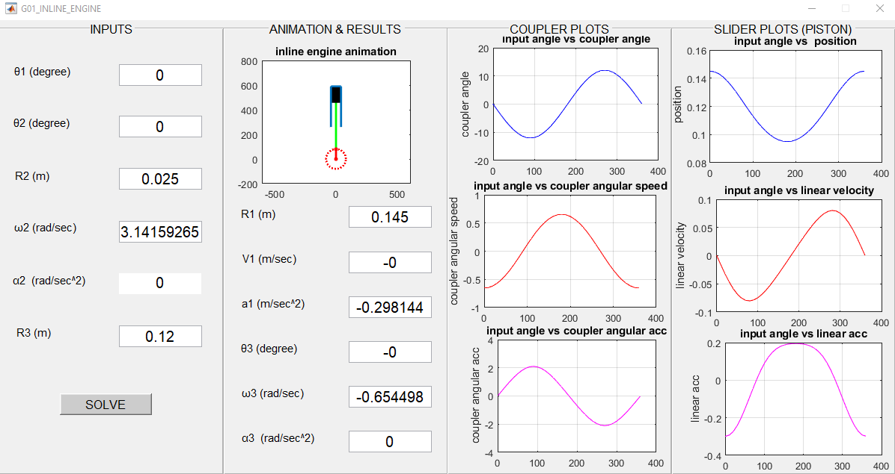
Project Details
Duration
4 months
Tools Used
MATLAB, SolidWorks, Python
Nesting Plates - Multi-Body Parts Optimization
Project Overview
Developed an advanced nesting solution for optimizing the layout of multiple body parts on sheet metal, maximizing material utilization and reducing waste.
Technical Approach
The project implemented a sophisticated nesting algorithm that considers:
- Part geometry and constraints
- Material properties and limitations
- Manufacturing requirements
- Cutting path optimization
- Quality control parameters
Results
The nesting solution achieved a 30% reduction in material waste and improved production efficiency by 25%.
Project Gallery
Project Details
Duration
3 months
Tools Used
NestFab, SolidWorks, CATIA
Key Achievements
30% material waste reduction, 25% production efficiency improvement
View Full ReportLet’s build something.
Let's connect and explore how we can achieve great results together.
Call Me
+20 106 026 0244
Email Me
m.samhoud@hotmail.com